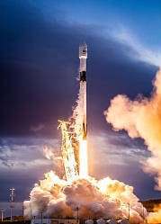
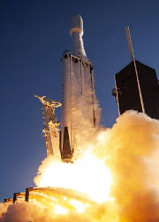
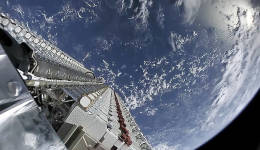

Available Spaceships
SPACESHIP: FALCON 9

- Falcon 9
- É um foguete de dois estágios projetado e construído pela SpaceX no Estados Unidos. É movido pelos motores Merlin, também desenvolvidos pela SpaceX, queimando oxigênio líquido e querosene refinado como propelentes.
SPACESHIP: FALCON HEAVY

- Falcon Heavy
- É um veículo de lançamento reutilizável de origem estadunidense projetado e produzido pela empresa SpaceX. O Falcon Heavy é o foguete mais poderoso do mundo em operação e o maior desde o Saturn V da NASA.
SPACESHIP: STARLINK

- Starlink
- É uma constelação de satélites de internet em desenvolvimento pela SpaceX. O serviço de internet usará 4.425 satélites de comunicações interligados em órbitas de 1 100 km. Pertencente e operado pela SpaceX, o objetivo do negócio é aumentar a lucratividade e o fluxo de caixa, para permitir que a SpaceX construa sua colônia em Marte.